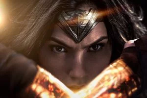
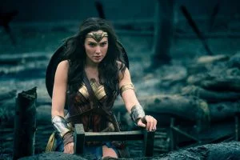
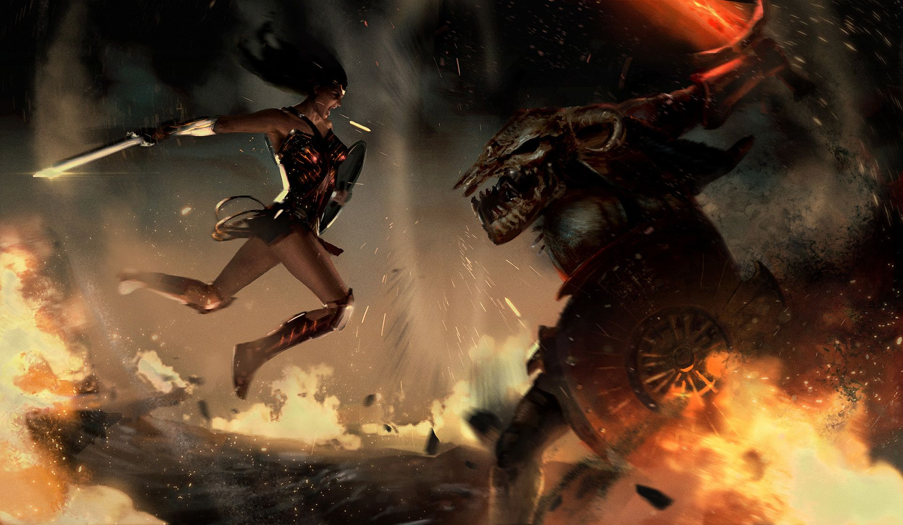
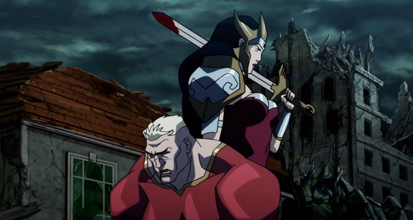
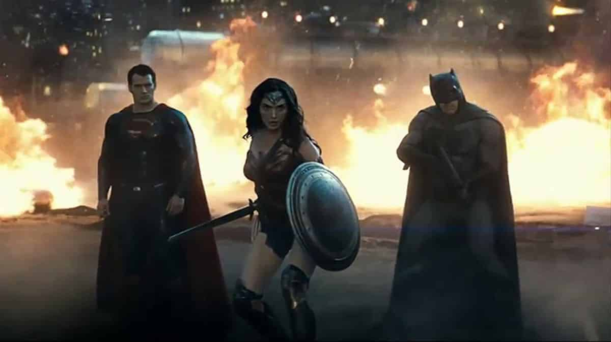
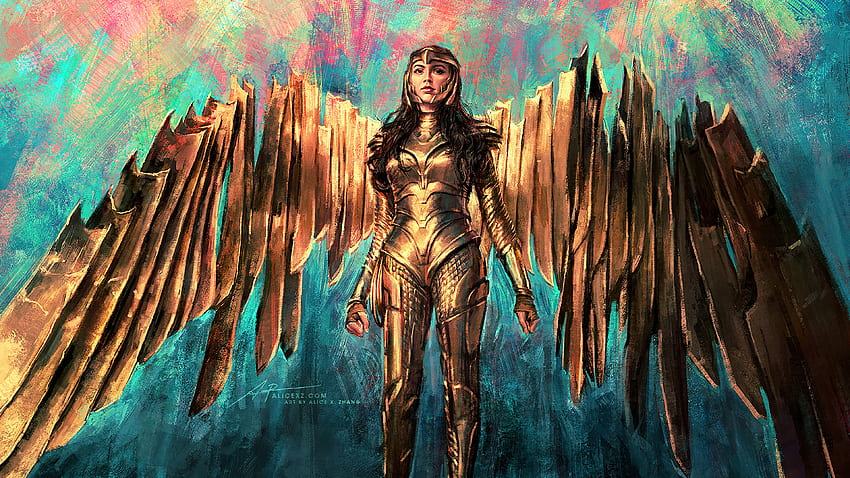
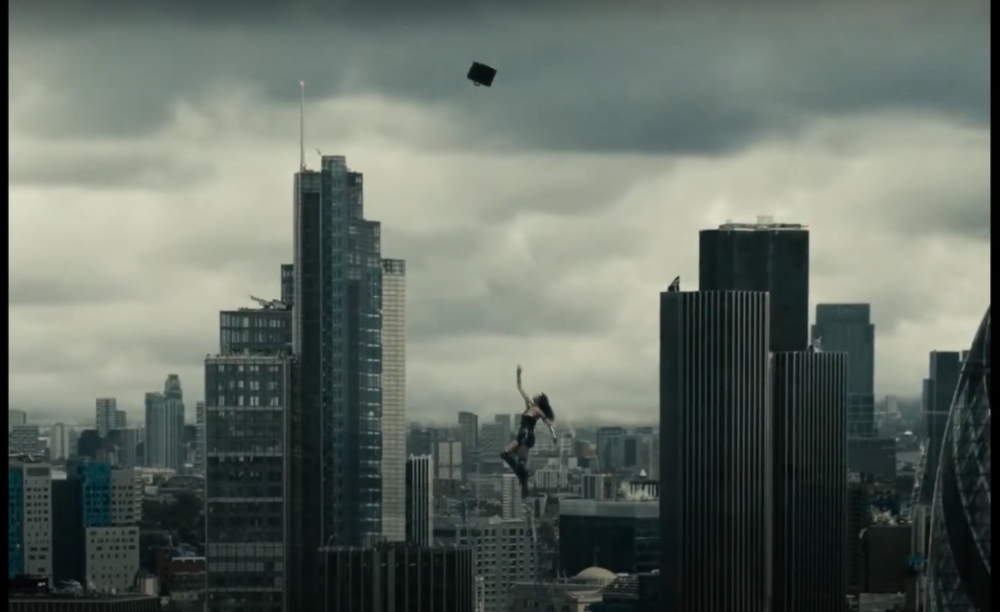

Los mejores momentos de Wonder Woman de todos los tiempos
-
 Contra Doomsday (Batman vs Superman) -
 “No Man’s Land” (WW, 2017) -
 Wonder Woman derrota a Ares (WW, 2017) -
 Wonder Woman mata a Aquaman y Shazam (justice league: the flashpoint paradox) -
 Wonder Woman hace su aparición (Batman vs Superman) -
 Wolden Armor (WW 1984) -
 Wonder Woman vs Terroristas (Justice League Snyder cup)